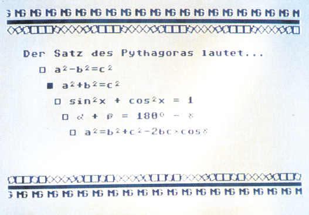
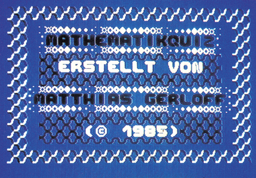

Quizmaster — die Hilfe bei Lernproblemen
Der Computer als universeller Fragebogen — Er hilft Ihnen bei Ihren Prüfungsvorbereitungen, kann aber ebenso als Party-Gag verwendet werden.


Quizmaster ist ein Generator-Programm, das Sie befähigt, eigene Multiple-Choice-Fragen mit grafischer Untermalung zu erstellen. (Multiple Choice ist ein Fragebogen-System, bei dem man mehrere mögliche Antworten zur Auswahl hat, von denen aber nicht unbedingt alle richtig sind.) So können Sie sich zum Beispiel einen Sprachen- oder Mathematikkurs selbst erstellen und sich quasi vom Computer ausfragen lassen.
Durch die Möglichkeit, sich seine Fragen und Antworten universell, das heißt aus jedem Themengebiet, zusammenzustellen und durch geschickte Anordnung und Aufbau der Fragebogenseiten ein attraktives und lehrreiches Quiz zusammenzustellen, wird das Programm erst richtig interessant.
Der aktuelle Prozentsatz an richtigen und falschen Antworten ist nach Beantwortung jeder einzelnen Frage am unteren Bildschirmrand zu sehen, was eine laufende Leistungskontrolle ermöglicht.
Die besonderen Möglichkeiten des Programms sind:
- Einbinden von bis zu zwei frei definierbaren Zeichensätzen,
- zwei Bewegungssequenzen von je 16 Zeichen,
- für jede der bis zu 99 Fragen gibt es einen eigenen Bildschirm,
- Editieren eines Bildschirms wie mit dem Basic-Editor, aber mit einigen Extras,
- alle Funktionen werden durch Menüs gesteuert.
Dieses Listing beweist wieder einmal, daß man auch mit relativ wenig Aufwand durch guten Programmierstil ein effektives Programm schreiben kann. Wenn Sie sich die Listings einmal angeschaut haben und befürchten, daß es Ihnen zuviel Tipparbeit ist, so können Sie beruhigt sein. Sie müssen nur »QUIZMASTER« und »←QUIZML« eingeben. Danach ist das Programm schon voll lauffähig. Das Listing »←Quizchar« bietet einen Demo-Zeichensatz an. Beim Eintippen können Sie alle REM-Zeilen weglassen.
(Matthias Gerloff/dm)Prüfungsvorbereitungen oder Party-Gag — Dieser Quizgenerator ist für alles universell verwendbar.
Zuerst eine Funktionsbeschreibung: Wenn Sie »Quizmaster« gestartet haben, wird noch »←Quizml« geladen und das Hauptmenü erscheint. Falls sich ein Titelbild oder ein Zeichensatz auf der Diskette befindet, werden diese vorher geladen beziehungsweise angezeigt.
Grundsätzlich wird der Cursor mit der Taste »Cursor abwärts« nach unten und mit der Taste »Cursor rechts« nach oben gesteuert. Das Anwählen einer Funktion erfolgt dann mit RETURN. Durch Anwählen des Punktes »Farbmenü« können sämtliche Farbeinstellungen verändert werden. Dieses hat jedoch keinen Einfluß auf erstellte Bilder oder Fragen. Möchten Sie ein Quiz erstellen oder verändern, so wählen Sie bitte das »Editormenü« an. Doch Vorsicht: der Unterpunkt »Quiz anlegen« formatiert die eingelegte Diskette. Dieser Punkt ist wichtig, wenn Sie das Quiz zum ersten Mal anlegen.
Quiz erstellen
Um Fragen und Titelbilder zu erstellen, gehen Sie bitte in das Menü »Bild editieren«. Ihr Cursor ist das kleine Quadrat oben links. Sollten Sie nichts erkennen können, so können Sie mit den Funktionstasten F3, F5 und F7 die Farben des Cursors, des Rahmens und des Hintergrundes verändern. Ansonsten haben alle Tasten ihre gewohnten Funktionen. »SHIFT-CLR/HOME« löscht tatsächlich den Bildschirm. Dennoch gibt es ein paar Sonderfunktionen: Ihr Cursor kann nach oben und unten aus dem Bild bewegt werden. Er erscheint dann wieder auf der gegenüberliegenden Seite. Außerdem werden nach »INST« oder Anführungsstrichen keine lästigen Steuerzeichen mehr ausgegeben. Das Bearbeiten der untersten Zeile ist leider nicht möglich. Mit F1 gelangen Sie wieder ins »Editormenü«.
Erstellen Sie nun eine Frage, so müssen Sie die möglichen Antworten mit einem »@« kennzeichnen, welcher als kleines Quadrat sichtbar wird. Die richtige Antwort ist mit einem reversen Klammeraffen (»@«) kenntlich zu machen. Sie können dieses aber auch unterlassen und die richtige Antwort erst beim Speichern per Menüauswahl kennzeichnen. Wenn Sie nun eine Frage speichern wollen, so wählen Sie den Punkt »Bild speichern« an. Falls Sie noch keine Antwort markiert haben, können Sie dieses hier nachholen. Geben Sie nun eine Nummer ein, die nicht Null und nicht größer als die maximale Anzahl ist. Haben Sie sich vertippt, so geben Sie einfach die richtige Nummer ein und die falsche wird nach links aus der Anzeige herausgeschoben. So können Sie ein Bild auch als Titelbild von Ihrem Quiz oder vom »Quizmaster« verwenden. Dazu benutzen Sie die entsprechenden Funktionen.
Einbau von Titelbildern
Wovon hängt es denn nun ab, ob das Titelbild vom »Quizmaster« oder vom Quiz selber benutzt wird? Davon, ob es auf der »Quizmaster«-Diskette oder der mit Ihrem eigenen Quiz steht. Das bedeutet, es wird immer das Titelbild benutzt, das sich auf der im Laufwerk eingelegten Diskette befindet.
Der Zeichensatz
Nun ist der Commodore-Zeichensatz nicht gerade geeignet, um tolle Titelbilder oder Fragen mit Sonderzeichen zu erstellen. Deshalb können Sie selbstdefinierte Zeichensätze nachladen und auch speichern. Soll ein Zeichensatz von Ihrem Quiz benutzt werden, so muß er unter dem Namen »←Quizchar« auf die entsprechende Diskette gespeichert werden. Es gilt das gleiche, das auch zum Titelbild gesagt wurde. Damit Sie Ihren persönlichen Zeichensatz nutzen können, muß er folgende Bedingungen erfüllen:
- er muß als PRG-File gespeichert sein,
- er muß den Aufbau haben, der den Bildern 1 und 2 zu entnehmen ist.
Es kann auch ein Doppelzeichensatz definiert werden. Das sind zwei Zeichensätze, die hintereinander gespeichert sind. So ein Zeichensatz wäre etwa ein mit Hi-Eddi erstellter. Die Zeichen »@« und »RVS@« können bei allen Zeichensätzen nicht benutzt werden, da sie für die Menüauswahl und die Antworten gebraucht werden. Es ist also einfach, sich ein eigenes Titelbild mit eigenem Zeichensatz zu erstellen. Wem dieses zu viel Arbeit ist, der kann sich einen bereits vorhandenen Zeichensatz abtippen (Listing 3). Sollten Sie das Problem haben, Ihren Zeichensatz nur als Basic-Lader zu besitzen, dann gehen Sie wie folgt vor, um ihn für den Quizmaster nutzbar zu machen:
Load"←Quizml",8,1:NEW:SYS 50266
Dann Ihren Zeichensatz laden und POKEn lassen. Als Startadresse des Zeichensatzes ist 40960 anzugeben:
POKE 828,83:P0KE 829,58
A$=" NAME"
FOR 1=1 T0 LEN (A$):POKE 829+1,
ASC(MID$(A$,1,1)):NEXT:POKE 2,LEN(A$)
Dann noch:
SYS 50283
und Ihr Zeichensatz wird unter »NAME« gespeichert.
Sie werden sich vielleicht gewundert haben, was die Funktion »Bewegung« bedeutet. Falls Sie diese Funktion angeschaltet haben, so werden zwei Bewegungssequenzen von je 16 Zeichen durchlaufen. Die Sequenzen benutzen die Zeichen mit den Bildschirmcodes 224 bis 239 und 240 bis 255. Bewegungssequenz bedeutet folgendes: Haben Sie irgendwo auf dem Bildschirm ein Zeichen stehen, dessen Bildschirmcode in eine der beiden Sequenzen fällt, so erscheinen dort nacheinander alle 16 Zeichen der betreffenden Sequenz.
Zur Entwirrung hier ein Beispiel: Nehmen wir einmal an, oben links in der Ecke steht ein Zeichen mit dem Bildschirmcode 240 und die »Bewegung« ist angeschaltet, dann erscheinen an derselben Stelle nacheinander die Zeichen mit dem Code 241, 242, 243, …, 255. Auf 255 folgt dann wieder 240 und so weiter. Probieren wir das einmal aus. »Bewegung« anschalten und »Bild editieren« wählen. Dann den Bildschirm löschen und »RVSON« sowie das Grafikzeichen »(Commodore-Taste + A)« eintippen. Nun noch den Editor mit F1 verlassen und auf »Bild zeigen« gehen. Das Bild erscheint und das Zeichen ändert in wilder Weise seine Form.
Bleibt nur noch die Funktion »Quiz spielen« im Hauptmenü. Diese Funktion führt Sie selbständig durch alle Stufen des Spieles.
Hinweise zum Eintippen
Das Programm besteht aus einem Basic- und einem Maschinenspracheteil. Bitte geben Sie zuerst das Hauptprogramm (Listing 1) ein und speichern es ab. Anschließend tippen Sie den Maschinenspracheteil (Listing 2) mit Hilfe des MSE ein und speichern ihn ebenfalls. Das Listing 3 können Sie ebenfalls abtippen, ist aber nicht für den Programmablauf maßgeblich. Es enthält nur einen Probe-Zeichensatz. Aus Tabelle 1 können Sie die Belegung des Speichers ersehen.
(Matthias Gerloff/dm)| $0400 | - $07FF | Zwischenspeicher Farb-RAM |
| $7DF6 | Ende des Basic-Speichers | |
| $8000 | - $83FF | 1. Bildschirm |
| $8400 | - $87FF | 2. Bildschirm |
| $8800 | - $993F | Cursorsprite |
| $A000 | - $A7FF | 1. Zeichensatz |
| $A800 | - $AFFF | 2. Zeichensatz |
| $B000 | - $B800 | Menüzeichensatz |
| $C000 | - $C4C8 | Maschinenspracheteil |